2025 Higher Chemistry - Paper 1 questions
Source: Scottish Qualifications Authority (SQA) / Qualifications Scotland. This is a StemInteract HTML companion, not an official HTML edition. Selectable text is supplied alongside original page images. Use the images or original PDF for equations, powers, fractions, vector notation, tables and diagrams; text extraction cannot fully preserve mathematical layout.
Jump to a question
PDF page 1
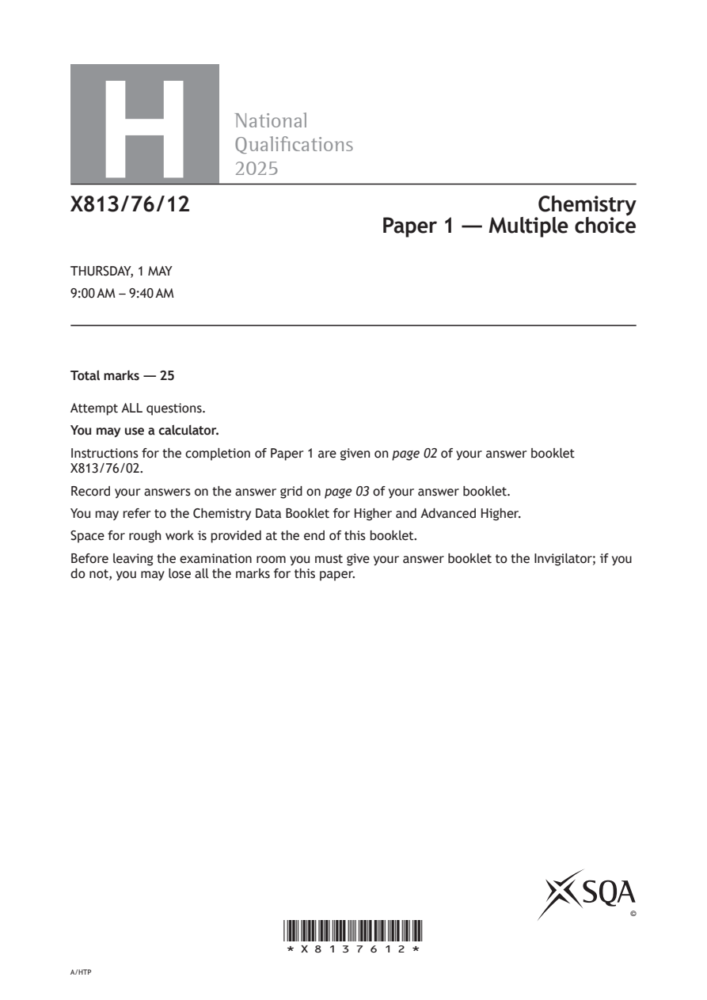
Selectable page text
H
National
Qualications
2025
X813/76/12 Chemistry
Paper 1 — Multiple choice
THURSDAY, 1 MAY
9:00 AM – 9:40 AM
Total marks — 25
Attempt ALL questions.
You may use a calculator.
Instructions for the completion of Paper 1 are given on page 02 of your answer booklet
X813/76/02.
Record your answers on the answer grid on page 03 of your answer booklet.
You may refer to the Chemistry Data Booklet for Higher and Advanced Higher.
Space for rough work is provided at the end of this booklet.
Before leaving the examination room you must give your answer booklet to the Invigilator; if you
do not, you may lose all the marks for this paper.
©
*X8137612*
A/HTPPDF page 2
Paper 1, Question 1Paper 1, Question 2Paper 1, Question 3Paper 1, Question 4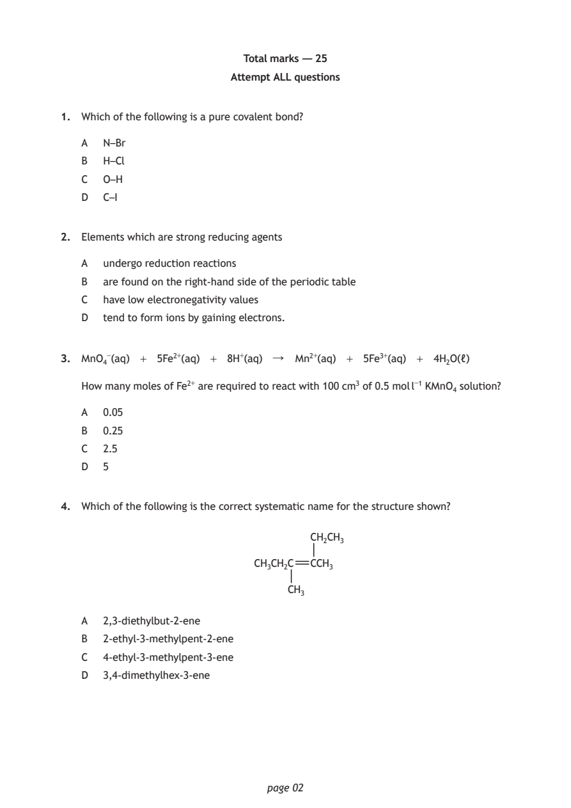
Selectable page text
Total marks — 25
Attempt ALL questions
1. Which of the following is a pure covalent bond?
A N–Br
B H–Cl
C O–H
D C–I
2. Elements which are strong reducing agents
A undergo reduction reactions
B are found on the right‑hand side of the periodic table
C have low electronegativity values
D tend to form ions by gaining electrons.
3. MnO₄⁻(aq) + 5Fe²⁺(aq) + 8H⁺(aq) ↓ Mn²⁺(aq) + 5Fe³⁺(aq) + 4H₂O(ℓ)
How many moles of Fe²⁺ are required to react with 100 cm³ of 0.5 mol l⁻¹ KMnO₄ solution?
A 0.05
B 0.25
C 2.5
D 5
4. Which of the following is the correct systematic name for the structure shown?
CH₂CH₃
CH₃CH₂C CCH₃
CH₃
A 2,3‑diethylbut‑2‑ene
B 2‑ethyl‑3‑methylpent‑2‑ene
C 4‑ethyl‑3‑methylpent‑3‑ene
D 3,4‑dimethylhex‑3‑ene
page 02PDF page 3
Paper 1, Question 5Paper 1, Question 6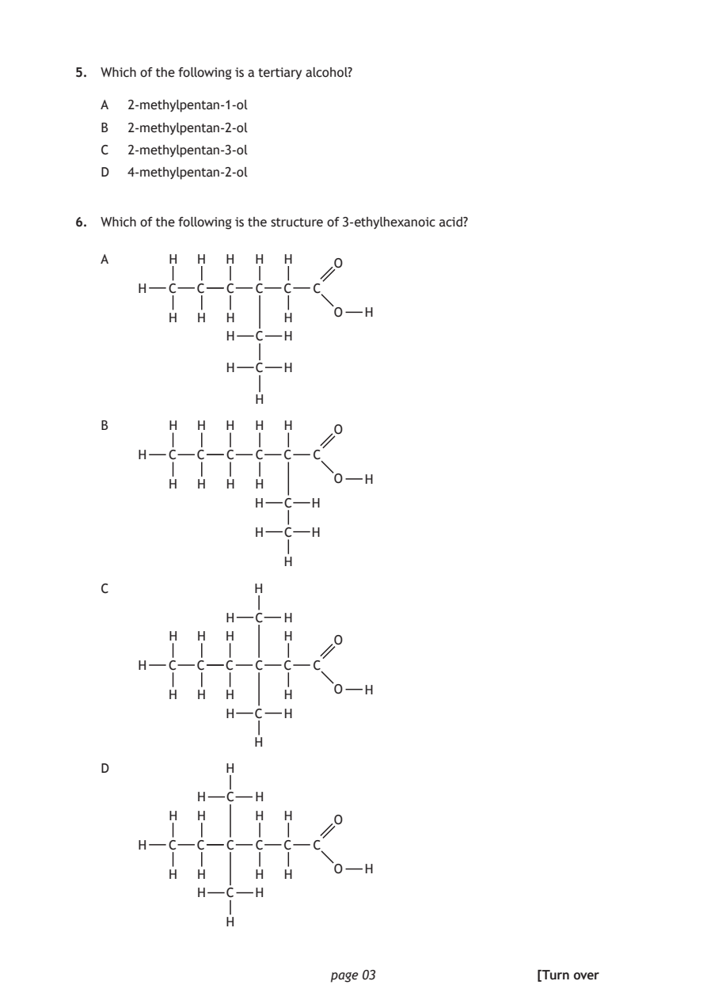
Selectable page text
5. Which of the following is a tertiary alcohol?
A 2‑methylpentan‑1‑ol
B 2‑methylpentan‑2‑ol
C 2‑methylpentan‑3‑ol
D 4‑methylpentan‑2‑ol
6. Which of the following is the structure of 3‑ethylhexanoic acid?
A H H H H H
O
H C C C C C C
O H
H H H H
H C H
H C H
H
B H H H H H
O
H C C C C C C
O H
H H H H
H C H
H C H
H
C H
H C H
H H H H
O
H C C C C C C
O H
H H H H
H C H
H
D H
H C H
H H H H
O
H C C C C C C
O H
H H H H
H C H
H
page 03 [Turn overPDF page 4
Paper 1, Question 7Paper 1, Question 8Paper 1, Question 9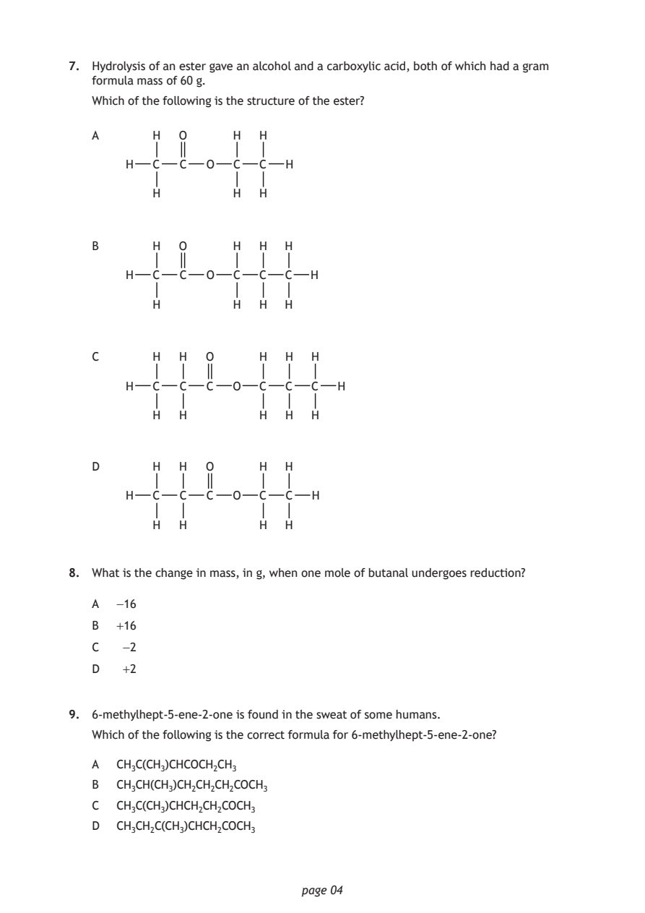
Selectable page text
7. Hydrolysis of an ester gave an alcohol and a carboxylic acid, both of which had a gram
formula mass of 60 g.
Which of the following is the structure of the ester?
A H O H H
H C C O C C H
H H H
B H O H H H
H C C O C C C H
H H H H
C H H O H H H
H C C C O C C C H
H H H H H
D H H O H H
H C C C O C C H
H H H H
8. What is the change in mass, in g, when one mole of butanal undergoes reduction?
A −16
B +16
C −2
D +2
9. 6‑methylhept‑5‑ene‑2‑one is found in the sweat of some humans.
Which of the following is the correct formula for 6‑methylhept‑5‑ene‑2‑one?
A CH₃C(CH₃)CHCOCH₂CH₃
B CH₃CH(CH₃)CH₂CH₂CH₂COCH₃
C CH₃C(CH₃)CHCH₂CH₂COCH₃
D CH₃CH₂C(CH₃)CHCH₂COCH₃
page 04PDF page 5
Paper 1, Question 10Paper 1, Question 11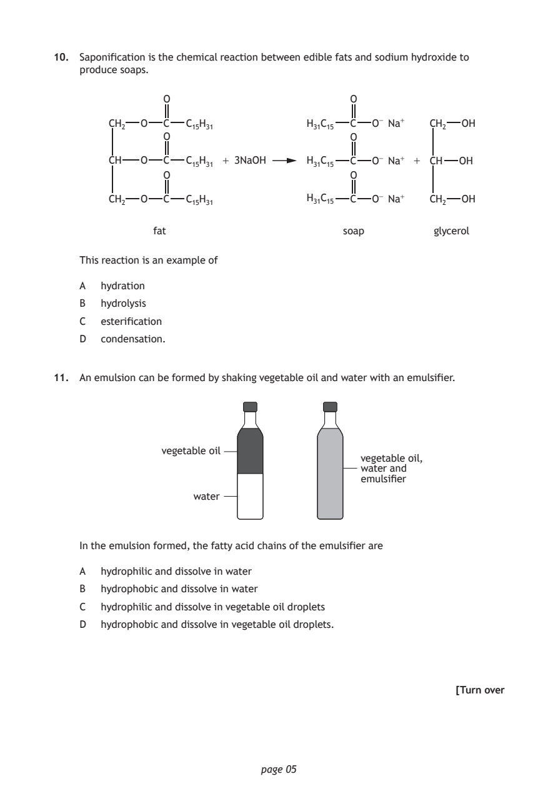
Selectable page text
10. Saponification is the chemical reaction between edible fats and sodium hydroxide to
produce soaps.
O O
CH₂ O C C₁₅H₃₁ H₃₁C₁₅ C O⁻ Na⁺ CH₂ OH
O O
CH O C C₁₅H₃₁ + 3NaOH H₃₁C₁₅ C O⁻ Na⁺ + CH OH
O O
CH₂ O C C₁₅H₃₁ H₃₁C₁₅ C O⁻ Na⁺ CH₂ OH
fat soap glycerol
This reaction is an example of
A hydration
B hydrolysis
C esterification
D condensation.
11. An emulsion can be formed by shaking vegetable oil and water with an emulsifier.
vegetable oil
vegetable oil,
water and
emulsifier
water
In the emulsion formed, the fatty acid chains of the emulsifier are
A hydrophilic and dissolve in water
B hydrophobic and dissolve in water
C hydrophilic and dissolve in vegetable oil droplets
D hydrophobic and dissolve in vegetable oil droplets.
[Turn over
page 05PDF page 6
Paper 1, Question 12Paper 1, Question 13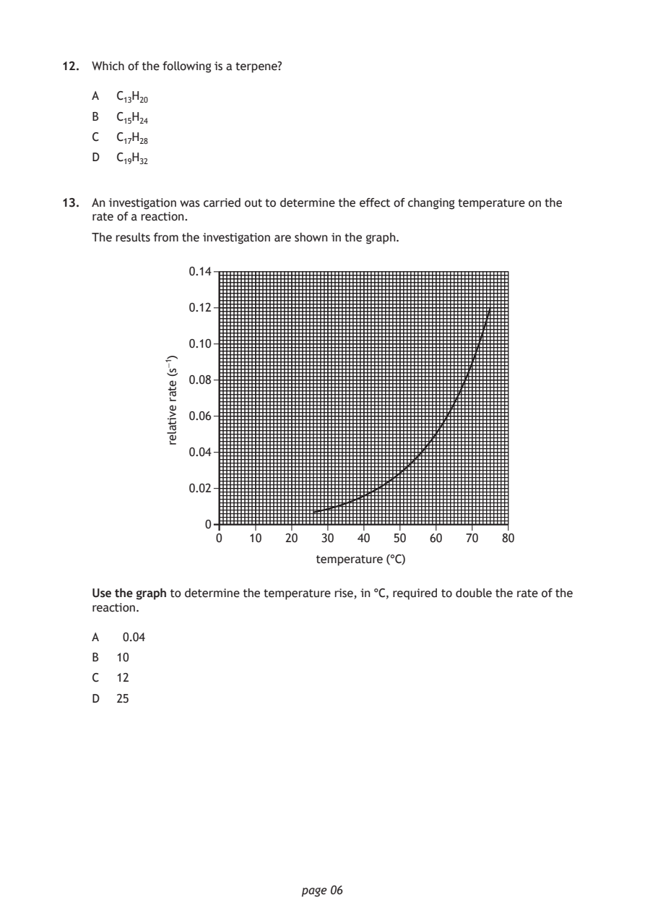
Selectable page text
12. Which of the following is a terpene?
A C₁₃H₂₀
B C₁₅H₂₄
C C₁₇H₂₈
D C₁₉H₃₂
13. An investigation was carried out to determine the effect of changing temperature on the
rate of a reaction.
The results from the investigation are shown in the graph.
temperature (°C)
page 06
)1−s(
etar
evitaler
0.14
0.12
0.10
0.08
0.06
0.04
0.02
0
0 10 20 30 40 50 60 70 80
Use the graph to determine the temperature rise, in °C, required to double the rate of the
reaction.
A 0.04
B 10
C 12
D 25PDF page 7
Paper 1, Question 14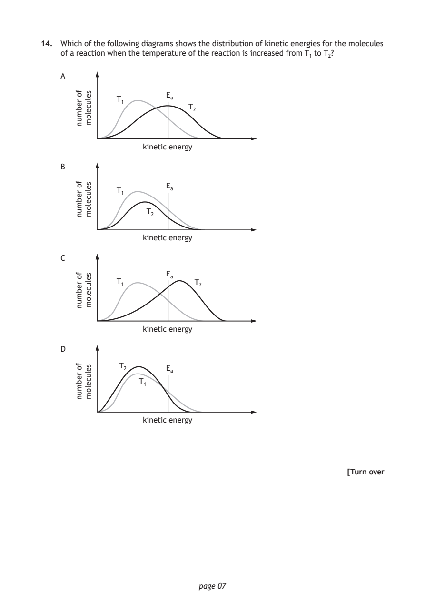
Selectable page text
14. Which of the following diagrams shows the distribution of kinetic energies for the molecules
of a reaction when the temperature of the reaction is increased from T₁ to T₂?
A
page 07
fo
rebmun
selucelom Eₐ
T₁
T₂
kinetic energy
B
fo
rebmun
selucelom Eₐ
T₁
T₂
kinetic energy
C
fo
rebmun
selucelom Eₐ
T₁ T₂
kinetic energy
D
fo
rebmun
selucelom T₂ Eₐ
T₁
kinetic energy
[Turn overPDF page 8
Paper 1, Question 15Paper 1, Question 16Paper 1, Question 17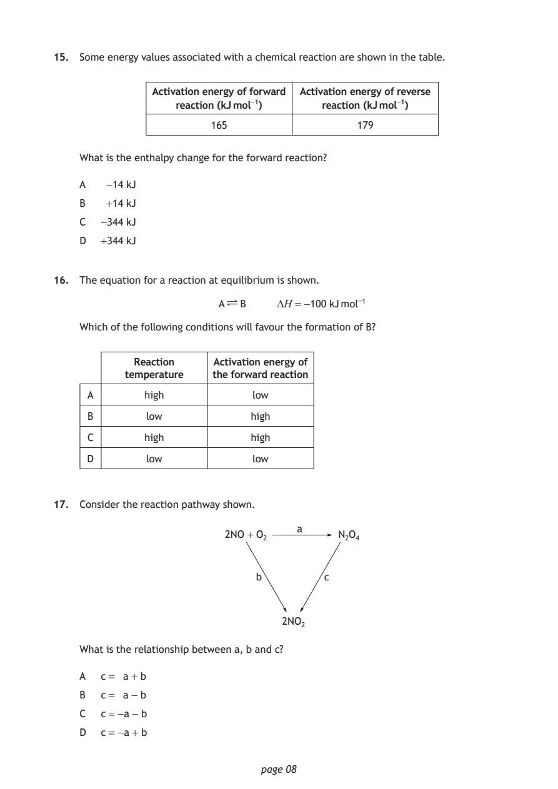
Selectable page text
15. Some energy values associated with a chemical reaction are shown in the table.
Activation energy of forward Activation energy of reverse
reaction (kJ mol⁻¹) reaction (kJ mol⁻¹)
165 179
What is the enthalpy change for the forward reaction?
A −14 kJ
B +14 kJ
C −344 kJ
D +344 kJ
16. The equation for a reaction at equilibrium is shown.
A ∏ B ∆H = −100 kJ mol⁻¹
Which of the following conditions will favour the formation of B?
Reaction Activation energy of
temperature the forward reaction
A high low
B low high
C high high
D low low
17. Consider the reaction pathway shown.
a
2NO + O₂ N₂O₄
b c
2NO₂
What is the relationship between a, b and c?
A c = a + b
B c = a − b
C c = −a − b
D c = −a + b
page 08PDF page 9
Paper 1, Question 18Paper 1, Question 19Paper 1, Question 20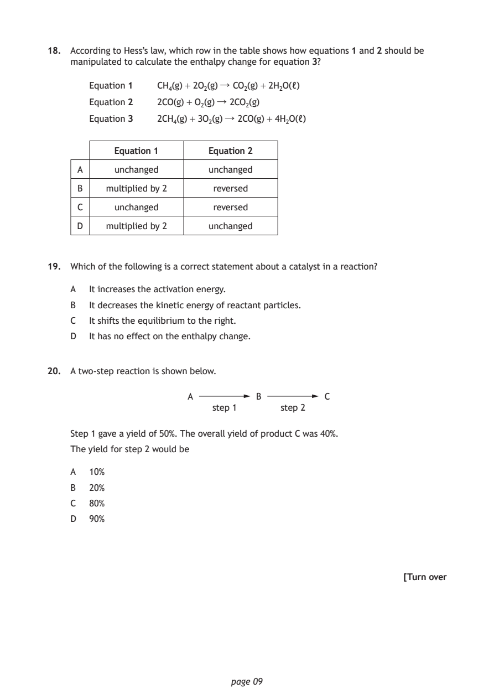
Selectable page text
18. According to Hess’s law, which row in the table shows how equations 1 and 2 should be
manipulated to calculate the enthalpy change for equation 3?
Equation 1 CH₄(g) + 2O₂(g) ↓ CO₂(g) + 2H₂O(ℓ)
Equation 2 2CO(g) + O₂(g) ↓ 2CO₂(g)
Equation 3 2CH₄(g) + 3O₂(g) ↓ 2CO(g) + 4H₂O(ℓ)
Equation 1 Equation 2
A unchanged unchanged
B multiplied by 2 reversed
C unchanged reversed
D multiplied by 2 unchanged
19. Which of the following is a correct statement about a catalyst in a reaction?
A It increases the activation energy.
B It decreases the kinetic energy of reactant particles.
C It shifts the equilibrium to the right.
D It has no effect on the enthalpy change.
20. A two‑step reaction is shown below.
A B C
step 1 step 2
Step 1 gave a yield of 50%. The overall yield of product C was 40%.
The yield for step 2 would be
A 10%
B 20%
C 80%
D 90%
[Turn over
page 09PDF page 10
Paper 1, Question 21Paper 1, Question 22Paper 1, Question 23Paper 1, Question 24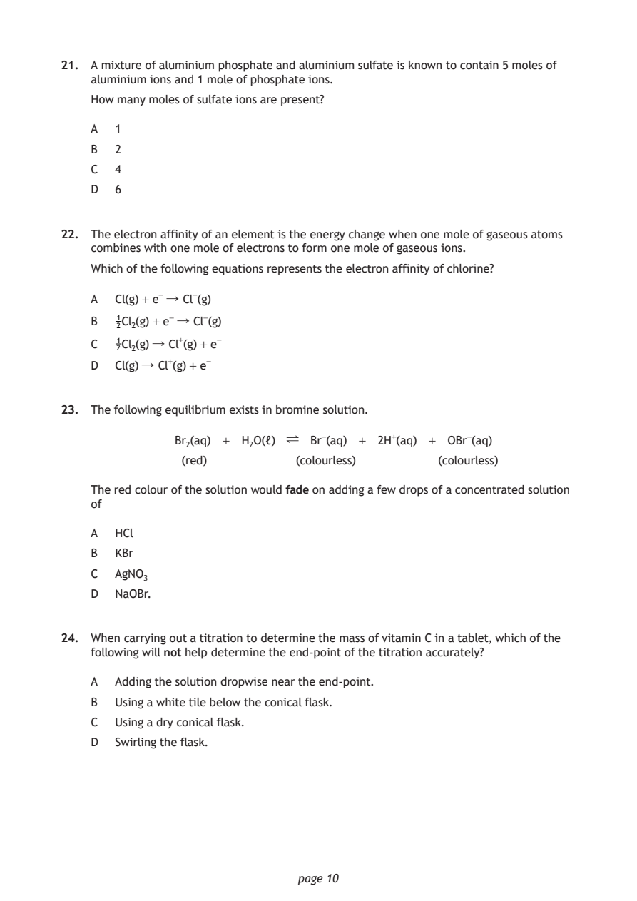
Selectable page text
21. A mixture of aluminium phosphate and aluminium sulfate is known to contain 5 moles of
aluminium ions and 1 mole of phosphate ions.
How many moles of sulfate ions are present?
A 1
B 2
C 4
D 6
22. The electron affinity of an element is the energy change when one mole of gaseous atoms
combines with one mole of electrons to form one mole of gaseous ions.
Which of the following equations represents the electron affinity of chlorine?
A Cl(g) + e⁻ ↓ Cl⁻(g)
B 1Cl₂(g) + e⁻ ↓ Cl⁻(g)
2
C 1Cl₂(g) ↓ Cl⁺(g) + e⁻
2
D Cl(g) ↓ Cl⁺(g) + e⁻
23. The following equilibrium exists in bromine solution.
Br₂(aq) + H₂O(ℓ) ∏ Br⁻(aq) + 2H⁺(aq) + OBr⁻(aq)
(red) (colourless) (colourless)
The red colour of the solution would fade on adding a few drops of a concentrated solution
of
A HCl
B KBr
C AgNO₃
D NaOBr.
24. When carrying out a titration to determine the mass of vitamin C in a tablet, which of the
following will not help determine the end‑point of the titration accurately?
A Adding the solution dropwise near the end‑point.
B Using a white tile below the conical flask.
C Using a dry conical flask.
D Swirling the flask.
page 10PDF page 11
Paper 1, Question 25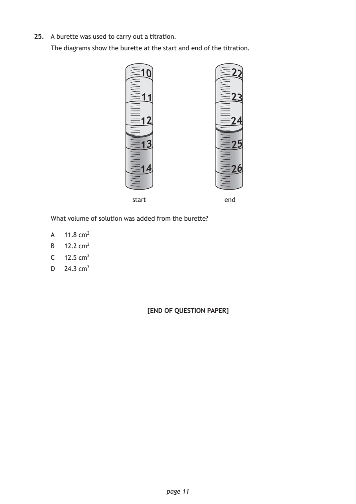
Selectable page text
25. A burette was used to carry out a titration.
The diagrams show the burette at the start and end of the titration.
10 22
11 23
12 24
13 25
14 26
start end
What volume of solution was added from the burette?
A 11.8 cm³
B 12.2 cm³
C 12.5 cm³
D 24.3 cm³
[END OF QUESTION PAPER]
page 11PDF page 12

Selectable page text
SPACE FOR ROUGH WORK
page 12PDF page 13

Selectable page text
SPACE FOR ROUGH WORK
page 13PDF page 14

Selectable page text
[BLANK PAGE]
DO NOT WRITE ON THIS PAGE
page 14PDF page 15

Selectable page text
[BLANK PAGE]
DO NOT WRITE ON THIS PAGE
page 15PDF page 16

Selectable page text
[BLANK PAGE]
DO NOT WRITE ON THIS PAGE
page 16